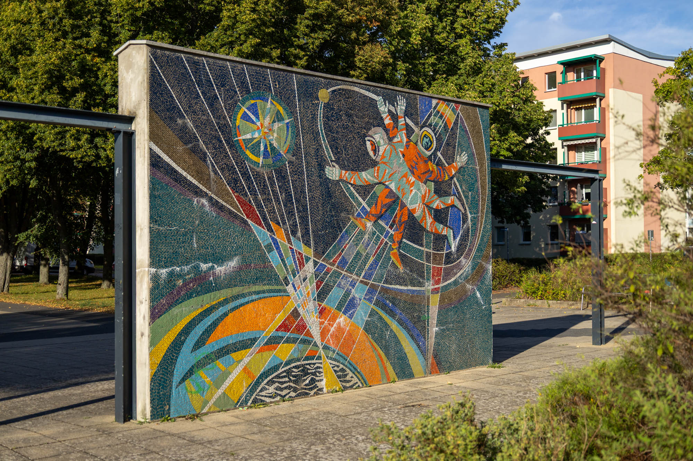
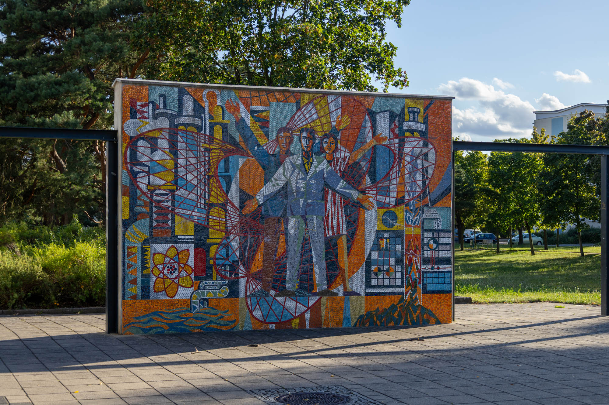
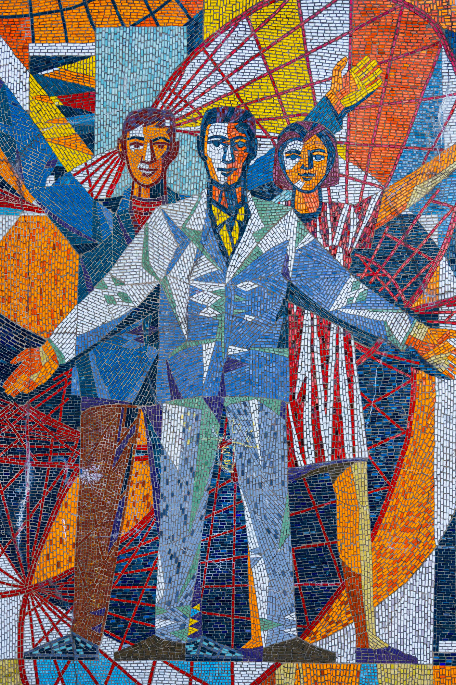
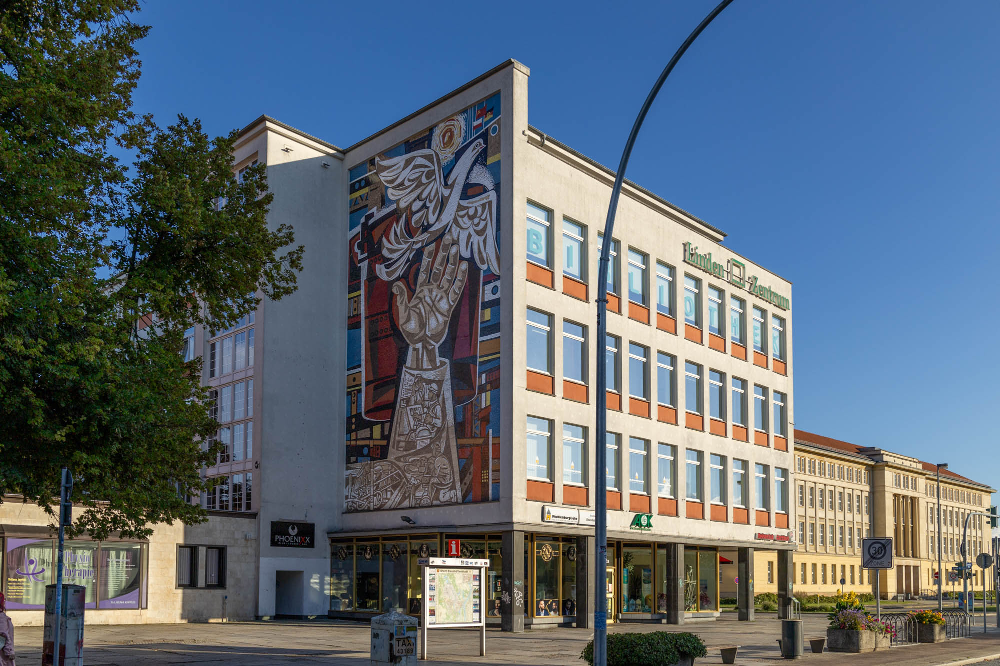

Founded in the 1950s as a planned socialist model city centred around a steel mill complex, Eisenhüttenstadt (meaning “iron works city”) has undergone several name changes. In 1953, it was renamed Stalinstadt following Stalin’s death, but reverted to Eisenhüttenstadt in 1961 during the de-Stalinisation period. Today, the city remains home to a significant steel factory and features many amazing Soviet-era mosaics.
Makrokosmos mosaic
Sometimes also referred to as "Weltall, Erde, Mensch" ("Space, Earth, Human"), this double-sided mosaic wall was constructed to celebrate scientific and technological advancements in the Soviet Union. The artwork depicts two cosmonauts venturing into the vast expanse of space.
By Otto Schutzmeister. Location: 52.139743, 14.650781

Mikrokosmos mosaic
The other side depicts a smaller slice of life: three scientists standing in front of the process and promise of atomic energy.
By Otto Schutzmeister. Location: 52.139743, 14.650781


"Gemeinschaftsarbeit der sozialistischen Länder" mosaic
With themes of socialism and cross-border solidarity, this large 16 x 10 metre mosaic adorns the side of a building on Lindenallee. Its title, roughly translated as "Joint Work of the Socialist Countries", reflects the spirit of cooperation and progress between Poland and East Germany.
By Walter Womacka. Location: 52.146500, 14.630117
